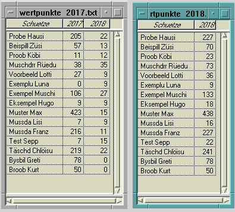

Testfälle Jahresmeisterschaftsprogramm
| Summary: |
Testfälle für das Jahresmeisterschaftsprogramm |
Verfasser:
|
Adrian
Böhlen |
| Datum: |
1. April 2021 |
| Version: |
1.0 |
| Status: |
final |
Inhalt:
Hinweise und Voraussetzungen
- In farbige Kästen geschriebene Kommandos sind genau so in der Konsole einzugeben. Grau bedeutet normale Shell, hellblau bedeutet Jahresmeisterschaftsprogramm (erkennbar am Prompt jahresmeisterschaft >)
- Einzugebende Parameter sind in eckige Klammern gefasst ⟨⟩, die nicht mit einzugeben sind.
- Die Testfälle müssen im entsprechenden Source-Verzeichnis ausgeführt werden.
- Durch Testfälle angelegte zusätzliche Dateien sind anschliessend wieder zu löschen.
- Zum direkten Betrachten der Tabellen wird ein Programm benötigt, welches CSV-Dateien übersichtlich darstellen kann (z.B. LibreOffice oder ArcView).
- Zum Erstellen von PDF-Dateien wird das Programm pdc2pdf benötigt.
Teilnehmer neu erfassen 1
Ausgangslage
keine CSV und LOG Dateien vorhanden.
Aktion
-
| ./jahresmeisterschaft_main.awk |
| erf |
- Daten eines fiktiven Teilnehmers erfassen.
- Am Schluss mit der Option ⟨3⟩ zum Hauptprogramm zurückkehren.
-
Resultat
- Die Dateien teilnehmer.csv und 20xxxxxx.log sind vorhanden.
Optionen
- Der Inhalt der Tabelle mit folgendem Befehl ausgeben und kontrollieren, ob die Werte mit den eingegebenen übereinstimmen:
-
Teilnehmer neu erfassen 2
Ausgangslage
Keine CSV und LOG Dateien vorhanden.
Aktion
- Wie hier aber am Schluss mit der Option ⟨1⟩ einen weiteren Teilnehmer erfassen.
- Am Schluss mit der Option ⟨3⟩ zum Hauptprogramm zurückkehren.
-
Resultat
- Die Dateien teilnehmer.csv und 20xxxxxx.log sind vorhanden.
- Die Tabelle teilnehmer.csv muss die korrekte Struktur aufweisen:
Falls Umlaute/Sonderzeichen oder Sonderzeichen falsch dargestellt werden, stellt das kein Problem dar.
Optionen
- Der Inhalt der Tabelle mit folgendem Befehl ausgeben und kontrollieren, ob die Werte mit den eingegebenen übereinstimmen:
-
Daten eines Teilnehmers korrigieren
Ausgangslage
Tabelle teilnehmer.csv muss vorliegen, d.h. z.B. dieser Testfall muss durchgeführt worden sein.
Aktion
-
| ./jahresmeisterschaft_main.awk |
| korr |
- Name eines Teilnehmers aus der Liste auswählen.
- Eines der Schiessen auswählen und einen anderen Wert eintragen.
- Korrekturmodus mit der Option ⟨2⟩ verlassen.
-
Resultat
- Die Dateien teilnehmer.csv, teilnehmer.csv.bak und 20xxxxxx.log sind vorhanden.
- In der Tabelle teilnehmer.csv muss der korrigierte Wert stehen.
- In der Tabelle teilnehmer.csv.bak muss der ursprüngliche Wert stehen. Auch die Prozentwerte kontrollieren!
- Im Logfile muss der korrigierte Wert plus Prozentwert unten aufgeführt sein.
Optionen
- Ein Schiessresultat so korrigieren, dass die Kranzlimite unter- oder überschritten wird. Kontrollieren, dass der Wert im Feld «Kraenze» angepasst wurde.
Daten erfassen und korrigieren
Ausgangslage
Keine CSV und LOG Dateien vorhanden.
Aktion
-
| ./jahresmeisterschaft_main.awk |
| erf |
- Daten eines fiktiven Teilnehmers erfassen.
- Am Schluss mit der Option ⟨1⟩ einen weiteren Teilnehmer erfassen.
- Anschliessend mit der Option ⟨2⟩ in den Korrekturmodus wechseln.
- Name eines Teilnehmers aus der Liste auswählen.
- Eines der Schiessen auswählen und einen anderen Wert eintragen.
- Mit der Option ⟨1⟩ im gleichen Stil eine weitere Korrektur durchführen.
- Anschliessend mit der Option ⟨2⟩ den Korrekturmodus verlassen und mit der Option ⟨1⟩ einen weiteren Teilnehmer erfassen.
- Am Schluss mit der Option ⟨3⟩ zum Hauptprogramm zurückkehren.
-
Resultat
- Die Dateien teilnehmer.csv, teilnehmer.csv.bak und 20xxxxxx.log sind vorhanden.
- Die Tabelle teilnehmer.csv muss die korrekte Struktur aufweisen:
Falsch angezeigte Umlaute/Sonderzeichen stellen kein Problem dar.
- im Logfile müssen die erfassten und korrigierten Resultate in der richtigen Reihenfolge aufgeführt sein.
Optionen
- Der Inhalt der Tabelle mit folgendem Befehl ausgeben und kontrollieren, ob die Werte mit den eingegebenen übereinstimmen:
-
Daten auswerten
Ausgangslage
Tabelle teilnehmer.csv (ANSI codiert) aus dem Ordner testdaten im Arbeitsverzeichnis vorhanden.
Aktion
-
| ./jahresmeisterschaft_main.awk |
| calc rang |
| exit |
Resultat
- Die Dateien auswertung.csv, uebersicht.txt und 20xxxxxx.log sind vorhanden.
- Die Tabelle auswertung.csv muss die korrekte Struktur aufweisen und die neuen Felder «Gutpte» und «Resultate» mit folgenden Zahlen zeigen:
- Die Datei uebersicht.txt im Editor öffnen und folgendes kontrollieren:
- Bei der Teilnehmerin Bysbil Greti muss bei Resultat «Zuwenig Resultate» stehen.
- Das Resultat von Eksempel Hugo ist 498.125.
- Das Resultat von Probe Hausi ist 789.068.
Rangliste erstellen
Ausgangslage
Tabelle teilnehmer.csv (ANSI codiert) aus dem Ordner testdaten im Arbeitsverzeichnis vorhanden und Testfall Auswerten durchgeführt.
Aktion
-
| ./jahresmeisterschaft_main.awk |
| plo rangp |
- Als Jahr ⟨2018⟩ eingeben.
- Die Anzahl Teilnehmer der Kategorie A sind ⟨5⟩.
-
| exit |
| ./pdc2pdf_main.awk rangliste_2018.pdc |
Resultat
- Die Dateien rangliste_2018.pdc und rangliste_2018.pdf sind vorhanden.
- Die Datei rangliste_2018.pdf im Acrobat Reader öffnen und folgendes kontrollieren:
- Die Formatierung ist korrekt und die Textelemente sind sauber angeordnet.
- Alle Resultate haben 3 Stellen vor und 3 Stellen nach dem Dezimalpunkt.
--> falls nicht, manuell im PDC-File anpassen.
- Umlaute und andere Sonderzeichen erscheinen korrekt.
--> falls nicht, kontrollieren, dass auswertung.csv ANSI-codiert ist.
- Das Erstellungsdatum (unten rechts) stimmt mit dem aktuellen Datum überein.
- In der Kategorie A sind 5, in der Kategorie B 8 Teilnehmer aufgeführt.
- Bysbil Greti erscheinen am Ende mit dem Vermerk «Zuwenig Resultate».
- Auf Platz 1 der Kategorie A ist Muschdrr Rüedu mit 799.376 Punkten.
- Auf Platz 1 der Kategorie B ist Muster Max mit 542.337 Punkten.
- Die letzten 3 Teilnehmer der Kategorie A sind mit * gekennzeichnet, die ersten 3 der Kategorie B mit **.
- Die Legende von * und ** verweist auf das Folgejahr 2019.
- Bei den jeweils 3 ersten Teilnehmer steht «(Preis)».
- Die Zahl bei «Beteiligung» stimmt mit der Summe der Teilnehmer von Kategorie A und B überein.
--> falls nicht, manuell im PDC-File anpassen.
- Die Summe der jeweiligen Gutpunkte ist korrekt.
Wertpunkte nachführen
Ausgangslage
Tabellen teilnehmer.csv und wertpunkte_2017.csv (ANSI codiert) aus dem Ordner testdaten im Arbeitsverzeichnis vorhanden und Testfall Rangliste durchgeführt.
Aktion
-
| ./jahresmeisterschaft_main.awk |
| calc wert |
- Als Jahr ⟨2018⟩ eingeben.
-
Resultat
- Die neue Datei wertpunkte_2018.csv und die geänderte Datei wertpunkte_2017.csv sind vorhanden.
- Die Tabelle von 2017 muss 3 Spalten aufweisen, jene von 2018 deren 2

- Beide Tabellen enthalten 15 Einträge.
- Die Werte im Feld «2018» der Tabelle wertpunkte_2017.csv entsprechen den jeweiligen Gutpunktetotalen der rangliste_2018.pdf.
- Die Werte im Feld «2018» der Tabelle wertpunkte_2018.csv entsprechen der Summe der Werte der beiden Felder «2017» und «2018» der Tabelle wertpunkte_2017.csv.
Übersicht Wertpunkte erstellen
Ausgangslage
Testfall Wertpunkte nachführen durchgeführt und entsprechende Dateien vorhanden.
Aktion
-
| ./jahresmeisterschaft_main.awk |
| plo wertp |
- Als Jahr ⟨2018⟩ eingeben.
- Die Wertpunktetabelle des Vorjahres heisst ⟨wertpunkte_2017.csv⟩.
-
| exit |
| ./pdc2pdf_main.awk wertpunkte_2018.pdc |
Resultat
- Die Datei wertpunkte_2018.csv und die geänderte Datei wertpunkte_2017.csv sind vorhanden.
- Beide Tabellen müssen 2 Spalten aufweisen.
- Die Dateien wertpunkte_2018.pdc und wertpunkte_2018.pdf sind vorhanden.
- Die Datei wertpunkte_2018.pdf im Acrobat Reader öffnen und folgendes kontrollieren:
- Die Formatierung ist korrekt und die Tabelle ist sauber angeordnet.
- In jeder Zelle steht ein Eintrag.
- Umlaute und andere Sonderzeichen erscheinen korrekt.
- Das Erstellungsdatum (unten rechts) stimmt mit dem aktuellen Datum überein.
- In der Spalte «2018 bezogen» steht überall eine 0.
- Die Werte im Feld «2018» entsprechen den jeweiligen Gutpunktetotalen der rangliste_2018.pdf.
- Die Summe der Spalte «1.1.2018» lautet 1453.
- Die Summe der Spalte «2018» lautet 208.
- Die Summe der Spalte «Total Ende 2018» lautet 1661.
- Die Werte der Spalte «1.1.2018» entsprechen den Werten in der Tabelle wertpunkte_2017.csv.
- Die Werte der Spalte «Total Ende 2018» entsprechen den Werten in der Tabelle wertpunkte_2018.csv.
A Bluefish 1.0.7-Production, Adrian Böhlen